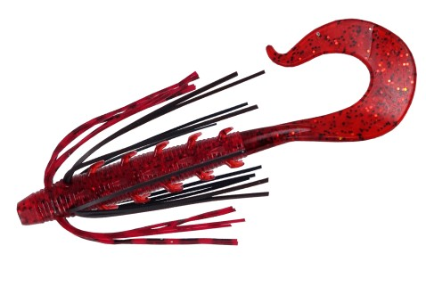
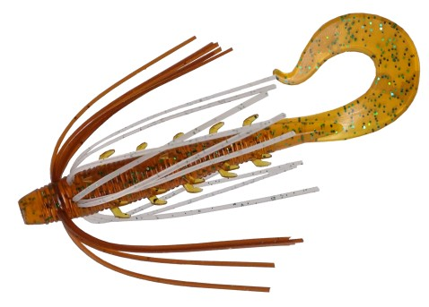
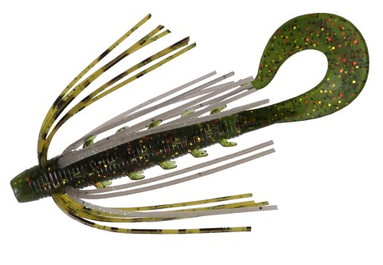
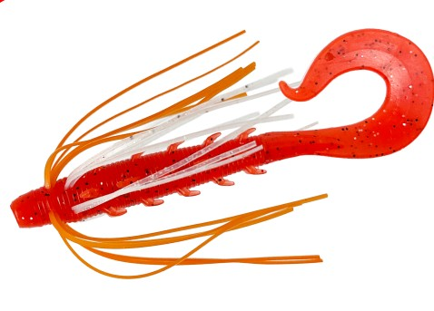

ハタ喰い・鵺
ハタ喰い・鵺はRUDIE'S（ルーディーズ）のラバー付きワームです。
リフト＆フォール、スイミング、ボトムシェイクという根魚狙いに欠かせない3大アクションに完全対応したワームです。ボディにインサートされたラバーがエビ・カニなどの甲殻類をイミテートし、ハタの捕食本能にアピールします。福岡のルアーメーカー・RUDIE'Sの「ハタ喰い」シリーズのひとつで、3.5・4.2・5.0インチの3サイズ展開です。

画像出典:RUDIE'S公式HP
スペック
- メーカー
- RUDIE'S（ルーディーズ）
- タイプ
- ラバー付きワーム（カーリーテール）
- サイズ
- 3.5inch・4.2inch・5.0inch
- 入数
- 3本
- カラー
- 全8色（各サイズ）
- 対応アクション
- リフト＆フォール・スイミング・ボトムシェイク
- ターゲット
- ハタ類などのロックフィッシュ
- 価格
- 700円（税別）
▼今すぐチェック

ハタ喰い・鵺の特徴
動かしても止めても誘える、ラバー入りの根魚ワーム
-
3大アクションに完全対応
リフト＆フォール、スイミングに加えて、ボトムシェイクでも有効なアクションが出せる。公式でも「リフト&フォールとスイミング以外に有効なアクションをもたらすワーム」と紹介されている。
-
甲殻類をイミテートするラバー
インサートされたラバーがエビ・カニなどの甲殻類を演出し、ハタの捕食本能に強くアピールする。
-
止めるとラバーがゆっくり広がる
アクションを止めるとラバーがゆっくりフレアして、食い渋るハタにも効果を発揮する。止めの時間も誘いになるのが強み。
ハタ喰い・鵺の使い方
基本はジグヘッドやテキサスリグでボトムまで沈め、リフト＆フォールで探るところから。反応がなければ中層をスイミングさせたり、ボトムで小刻みにシェイクしたりと、3つのアクションを切り替えていきます。
食いが渋い時は、シェイクやフォールのあとにしっかり止めてラバーを広げる「間」を作るのがコツです。
ハタ喰い・鵺の得意な状況
堤防や磯まわりのハタ類（アコウ・オオモンハタなど）、根の荒いボトムで甲殻類を食べている根魚を狙う状況が得意です。
リフト＆フォールやスイミングで反応が無い時に、ボトムシェイクで食わせられるのがこのワームの出番です。
ワンポイント
公式の適合フック表では、3.5inchは根魚狩りフック#2〜1・根魚狩りJ.H 5〜7g、4.2inchは#1〜1/0・7〜20g、5.0inchは1/0〜2/0・10〜20gがメインの組み合わせになっています。水深や潮の速さに合わせて選びましょう。
サイズの使い分け
| サイズ | 適合フック（根魚狩りフック） | 適合ジグヘッド（根魚狩りJ.H）の目安 |
|---|---|---|
| 3.5inch | #2（◎）・#1 | 5〜7g |
| 4.2inch | #1（◎）・1/0・2/0 | 5〜20g（5g・7gが◎） |
| 5.0inch | 1/0（◎）・2/0・4/0 | 10〜35g（10g・15g・20gが◎） |
※公式の「RUDIE'S ワーム製品 適合フックサイズ表」より（◎がベストマッチ）。入数は各3本、希望小売価格は700円（税別）。
カラーラインナップ
ハタ喰い・鵺は全8色。ライトボイルとクリアピンクが新色として追加されています。ここでは4色を紹介します。

ライトコーラ赤系のボディに黒のラバー。根魚の定番の赤系で、まず使いたい色。

モエビエビを思わせるナチュラルなブラウン系。甲殻類を食べている時に。

グリパン暗めのグリーン系。クリアな水や日中の食わせに。

ライトボイル（新色）ボイルしたエビのような赤オレンジ。濁りやローライトでのアピールに。
画像出典:RUDIE'S公式HP
ハタ喰い・鵺に似ているルアー
-
 クレイジーフラッパー2.8インチ
KEITECH
詳細はこちら＞
クレイジーフラッパー2.8インチ
KEITECH
詳細はこちら＞
チニング・ロックフィッシュにも使えるクローワーム。ウデのアクションで誘いたい時に。
-
 シルバーウルフ アーバンクローラー2.5
DAIWA
詳細はこちら＞
シルバーウルフ アーバンクローラー2.5
DAIWA
詳細はこちら＞
ボトムを引いて使うクロー系。浅場のボトムでチヌも狙うなら。
-
 コーヴァイチュー2.8インチ
SMITH
詳細はこちら＞
コーヴァイチュー2.8インチ
SMITH
詳細はこちら＞
カーリー形状のアームが付いたチニング用ワーム。ボトムを一定速度で引く釣りに。